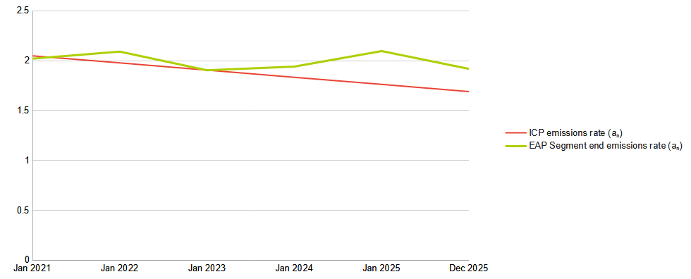
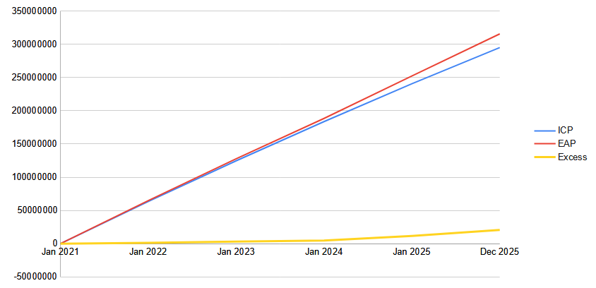

IE Carbon Budget Tracker: Proof of Principle demo
Barry McMullin
v. 0.1alpha (2024-08-09)
Caution: This is an experimental
work-in-progress. Data shown is for test/illustration
purposes only.
Realtime clock
Datetime NOW:
IE CB budget excess (AKA "cumulative overshoot"): Realtime Tracker(s)
Text-only Tracker
CB1 budget excess: 0.0 tCO2e
Gauge Tracker
Gauge Tracker [DUMMY]
This is a dummy version of the gauge tracker where the notional excess value is being artificially swept over a
range of positive and negative values just to illustrate how the gauge would appear in different circumstances.
Background: Illustrative Pathways and Budget "Excess" ("overshoot")
- "Indicative Compliance Pathway" [ICP] denotes a "piecewise
linear" emissions pathway where the emissions level (tCO2e/s)
declines linearly in time at just the right rate to exactly use
up the approved budget within each successive 5-year period
(starting with 2021-2025). The starting emissions level is
calibrated on the basis that, if the pathway for 2021-2025 were
extrapolated back for one year, the annual emissions level would
match that of 2018 (nominal "pre-pandemic" level).
- "Estimated Actual Pathway" [EAP] denotes an
emissions pathway which is "piecewise linear" for
each individual year at a time. The annual
emissions level in each year matches the most
recent EPA inventory where available, or
otherwise the most recent EPA projections. For
the first year (2021) the initial emissions level
is interpolated as the mid-point between the
annual inventory levels for 2020 and 2021. Within
each year, the emissions level changes linearly
to just match the required total annual
emissions. The level at the end of each year then
sets the initial level for the following year.
left.
- EAP is currently hardwired to follow the more optimistic EPA
projections, called "With Additional Measures" or WAM. However,
it would be better to also offer the option of using the more
realistic EPA "With Existing Measures" or WEM scenario (under
user control).
- At any point in time, if the
cumulative amount of the EAP is above that of the ICP this
difference (ΣEAP - ΣICP) is interpreted as an emerging budget
"excess", "overshoot" or "compliance gap". (Of course, if the
cumulative EAP were to fall below the cumulative ICP
this difference would be negative and indicate an emerging
budget surplus: happy days!).
- For the moment we are showing the excess denominated in
tCO2e. It might equally (?) be denominated in
percent of the "available" budget to that time (i.e., ΣICP).
- The gauge background uses a "traffic light" pattern: green is
"good" (definite compliance), red is "bad/stop" (definite
excess/overshoot), and then there is also an indicative area of orange in
between, denoting "uncertain" compliance status. The size of the
orange area is arbitrary, or rather relects a value judgement about the
reasonable space for ongoing policy "flexibility". But the
concepual intention is that going beyond orange, into red, should
unambiguously indicate a need for emergency policy action.
- So on top of the traffic light background we present an indicator bar (purple)
showing the current compliance status. If the indicator bar is
centred/invisible ("12 o'clock", or 0 tCO2e or 0% of the budget) then
we are running exactly as per the "Indicative Compliance"
pathway. If this bar extends into the area to the right (orange-to-red)
then this indicates an excess/overshoot and a compliance gap is
opening up. Conversely, moving into the left area (orange-to-green) would
indicate a (prudential!) "compliance surplus" being built up.
- The "full scale" amount is a again fairly arbitrary, but
would be informed by the projected maximum overshoot for
some point into the future.
- A separate or additional concept might be a gauge chart
showing not the accumulative compliance gap but
the rate at which that gap is increasing (or
decreasing): i.e. are we still accelerating (relative to
the "speed" that would comply with the budget) or are we at
least beginning to apply the brakes?
Detailed pathways
Indicative Compliance Pathway (ICP)
ICP d [2021]: tCO2e/s2
ICP a1 [2021]: tCO2e/s
Realtime Tracker
ICP n: s
ICP an: tCO2e/s
ICP Σan: tCO2e
Estimated Actual Pathway (EAP)
| prm | 2021 | 2022 | 2023 | 2024 | 2025 |
|---|
| Σa0 |
|
|
|
|
|
|---|
| d |
|
|
|
|
|
|---|
| a1 |
|
|
|
|
|
|---|
Realtime Tracker
EAP year segment:
EAP Σa0: tCO2e
EAP d: tCO2e/s2
EAP a1: tCO2e/s
EAP n: s
EAP an: tCO2e/s
EAP Σa0+Σan: tCO2e
Emissions Rate Pathways (tCO2e/s)

Cumulative Emissions Pathways (tCO2e)
